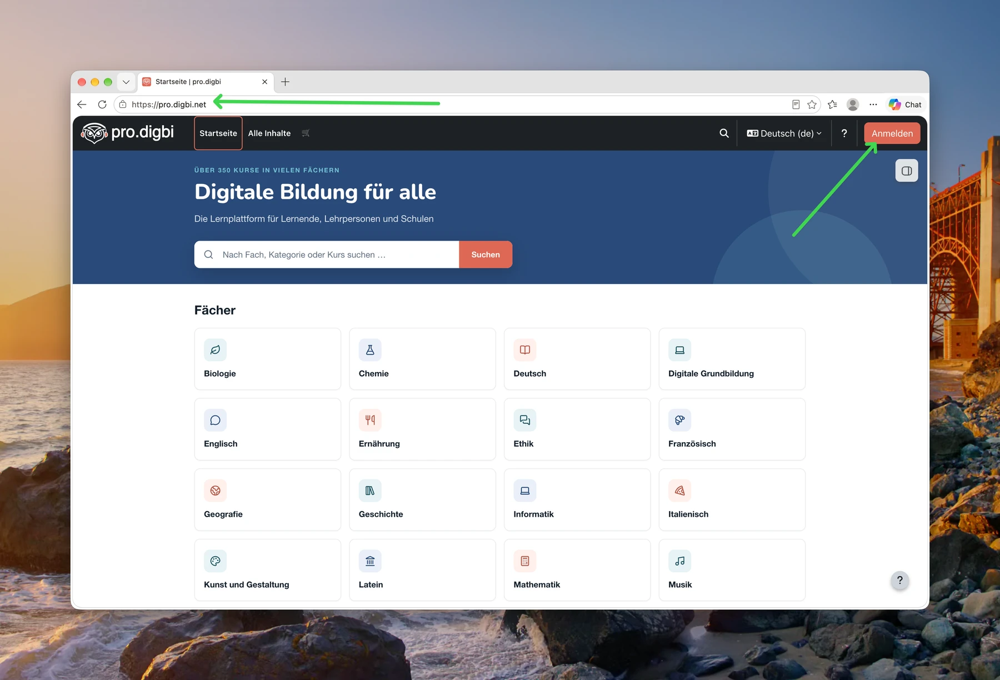

1. Digbi öffnen und „Anmelden“ wählen
Öffne pro.digbi.net in deinem Browser. Klicke oder tippe oben rechts auf Anmelden.
Wenn du die Adresse eintippst: Nutze die Adressleiste ganz oben, nicht das Suchfeld auf der Digbi-Seite.
Bist du schon mit deinem Schulkonto angemeldet? Gehe direkt zu Schritt 4.
